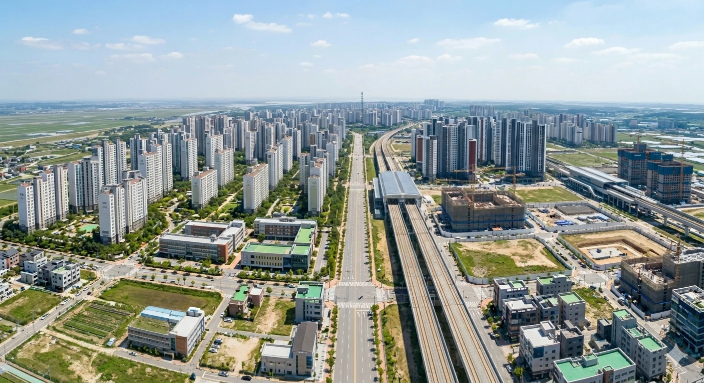
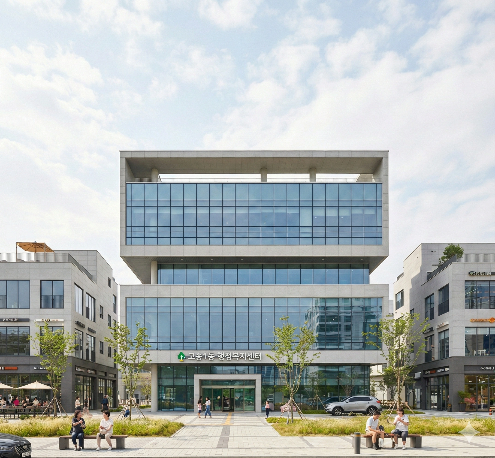
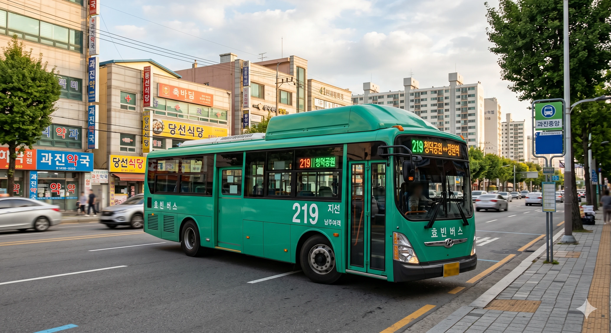
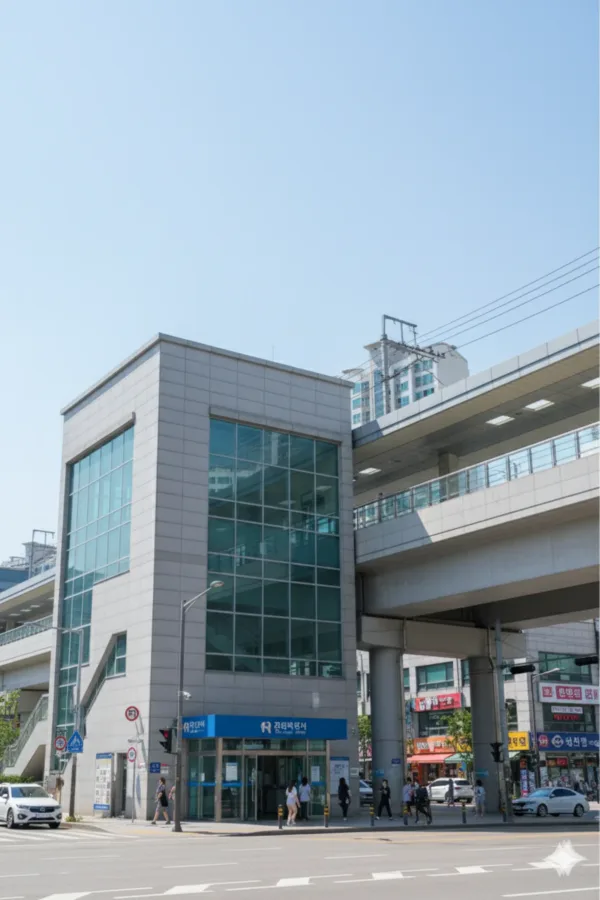

| 사진 | 도로명 | 노선 색상 | 총 연장 | 기점 | 종점 | 경유 행정구역 | 경유 버스 | 주요 시설물 |
|---|---|---|---|---|---|---|---|---|
|
 |
쌍엽로 |
#7777AA |
2516m | 효빈광역시 창전구 쌍엽2동(쌍엽동) | 효빈광역시 창전구 팔조동 | 효빈광역시 창전구 쌍엽2동(쌍엽동) | 효빈광역시 창전구 팔조동 | 효빈광역시 창전구 쌍엽1동(쌍엽동) | 급행버스01, 급행버스07, 순환버스70, 광역버스6000, 간선버스26, 간선버스27, 간선버스 47, 간선버스49, 간선버스57, 간선버스67, 간선버스 77, 간선버스79, 지선버스161, 지선버스171, 지선버스371, 지선버스471, 지선버스472, 지선버스481, 지선버스491, 지선버스572, 지선버스 781, 지선버스791 | 팔조초, 팔조동행정복지센터 |
| 토모리로 |
#7777AA |
3164m | 효빈광역시 북구 고송1동(고송동) | 효빈광역시 북구 고송6동(고송동) | 효빈광역시 북구 고송1동(고송동) | 효빈광역시 북구 고송2동(고송동) | 효빈광역시 북구 고송6동(고송동) | 급행버스02번, 급행버스09, 순환버스20, 광역버스3000, 좌석버스2222, 좌석버스3333, 좌석버스6666, 공항버스 A01, 공항버스A02, 지선버스251, 지선버스261, 지선버스271 | 버거킹 토모리점, 효빈유람선 북구선착장 | |
|
 |
토천로 |
#7777AA |
1317m | 효빈광역시 북구 고송1동(고송동) | 효빈광역시 북구 고송3동(고송동) | 효빈광역시 북구 고송1동(고송동) | 효빈광역시 북구 고송3동(고송동) | 급행버스02번, 급행버스09, 순환버스20, 지선버스251, 지선버스261, 지선버스271 | 웰탄아파트, 고송1동행정복지센터, 고송다이버아파트, 엘린아파트 |
|
 |
통성로 |
#7777AA |
2215m | 효빈광역시 서구 청덕1동(청덕동) | 효빈광역시 서구 과진7동(과진동) | 효빈광역시 서구 청덕1동(청덕동) | 효빈광역시 서구 청덕2동(청덕동) | 효빈광역시 서구 과진7동(과진동) | 순환버스20, 간선버스12, 간선버스22, 간선버스28, 지선버스129, 지선버스221, 지선버스231, 지선버스241, 지선버스261, 지선버스522 | 효빈서초(예정), 청덕다이버시티아파트, 청덕 두산위브 리버시티(2026년예정), 효빈체육중고등학교, 효빈체육고등학교, 중촌대학교, 중촌대서문, 효빈은행과진점, 과진2, 과진우체국 |
|
 |
통주로 |
#7777AA |
2086m | 덕빈북도 약산시 약산1동(약산동) | 덕빈북도 약산시 우부동(상수구동) | 덕빈북도 약산시 약산1동(약산동) | 덕빈북도 약산시 우부동(상수구동) | 광역버스7000, 좌석버스4004 |